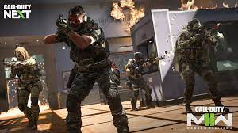
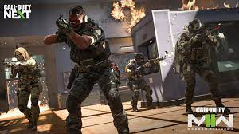

Call of Duty: Modern Warfare II
Call of Duty®: Modern Warfare® II voert spelers mee in een ongekend wereldwijd conflict, waarin de iconische Operators van Task Force 141 weer terugkeren.
- FPS
- Actie
- Multiplayer
- Shooter
- Singleplayer
Call of Duty®: Modern Warfare® II voert spelers mee in een ongekend wereldwijd conflict, waarin de iconische Operators van Task Force 141 weer terugkeren.
Rating:
Modes: Single-player, multiplayer, online-multiplayer
Genre: First person shooter
Ontwikkelaar: Infinity Ward, Raven Software, Beenox
Uitgeverij: Activision
Uitgavedatum: 28 oktober 2022
 

Besturingsysteem: Windows® 10 64-bit (meest recente update)
Processor: Intel® Core™ i3-6100 / Core™ i5-2500K of AMD Ryzen™ 3 1200
Geheugen: 8 GB RAM
Grafische kaart: NVIDIA® GeForce® GTX 960 of AMD Radeon™ RX 470 - DirectX 12.0 compatibel systeem
Direct X: Versie 12
Opslagruimte: 125 GB beschikbare ruimte
"It's Call of Duty. Sometimes you're having a great time, other times you're raging and getting spawn killed. Do you like Call of Duty? If yes you'll like this one. Plenty of guns to unlock and a rewarding unlock system. The attachments need to be reworked and the UI is bad. Maps are boring and overplayed. Multiplayer no longer crashes and it runs very well. Do I sometimes hate it? Absolutely. Do I sometimes love it? Absolutely. Call of Duty."
"het is een prijzig maar leuk spel. aan het begin waren er wat bugs die zijn nu wel zo goed als weg. ik zou het zeker aanraden. ook is voice chat gebruiken een aanradar als je wil lachen"
"Erg leuke game, maar je crached heeeeel vaak. 70 euro is dan veel te veel voor een game wat niet goed werkt!!"